Slide 1 / 65
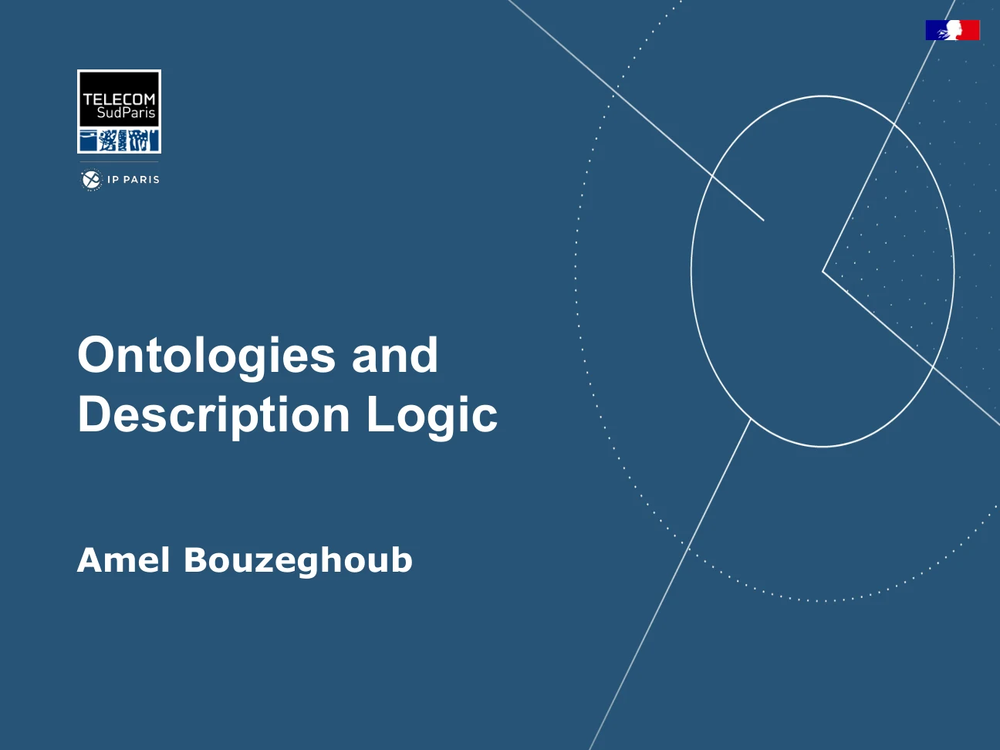
Slide text
Ontologies and Description Logic Amel Bouzeghoub
Slide 2 / 65
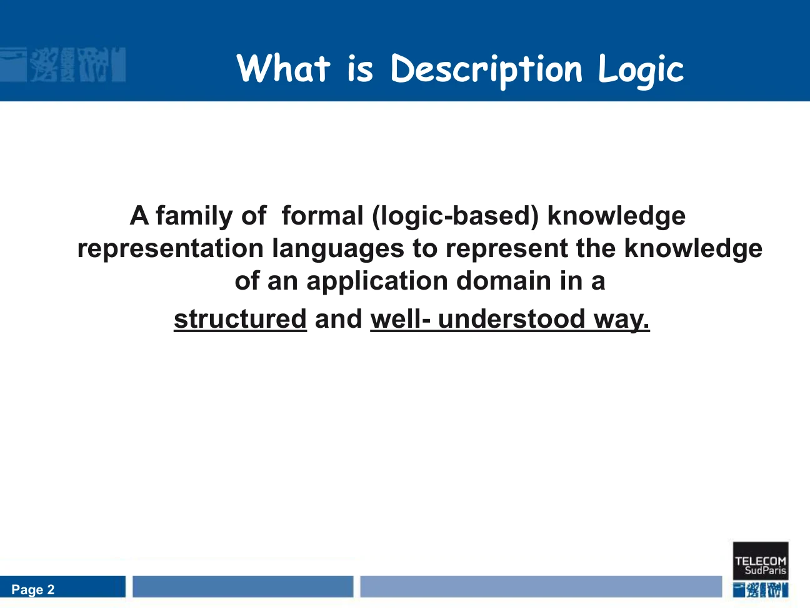
Slide text
What is Description Logic A family of formal (logic-based) knowledge representation languages to represent the knowledge of an application domain in a structured and well- understood way. Page 2
Slide 3 / 65
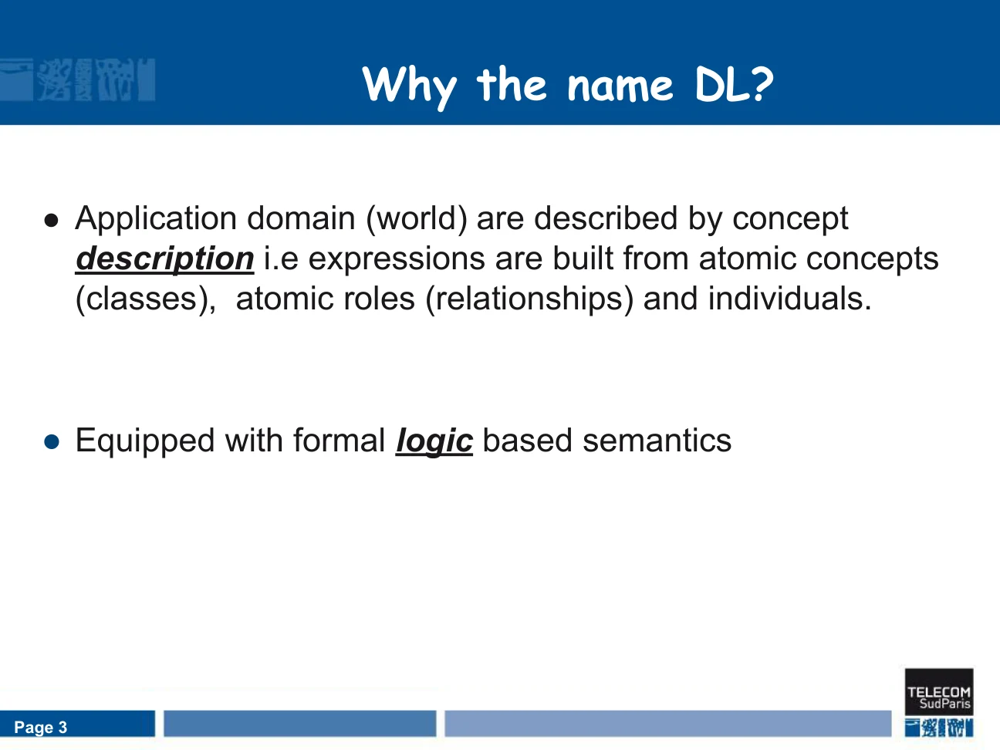
Slide text
Why the name DL? ●Application domain (world) are described by concept description i.e expressions are built from atomic concepts (classes), atomic roles (relationships) and individuals. ●Equipped with formal logic based semantics Page 3
Slide 4 / 65
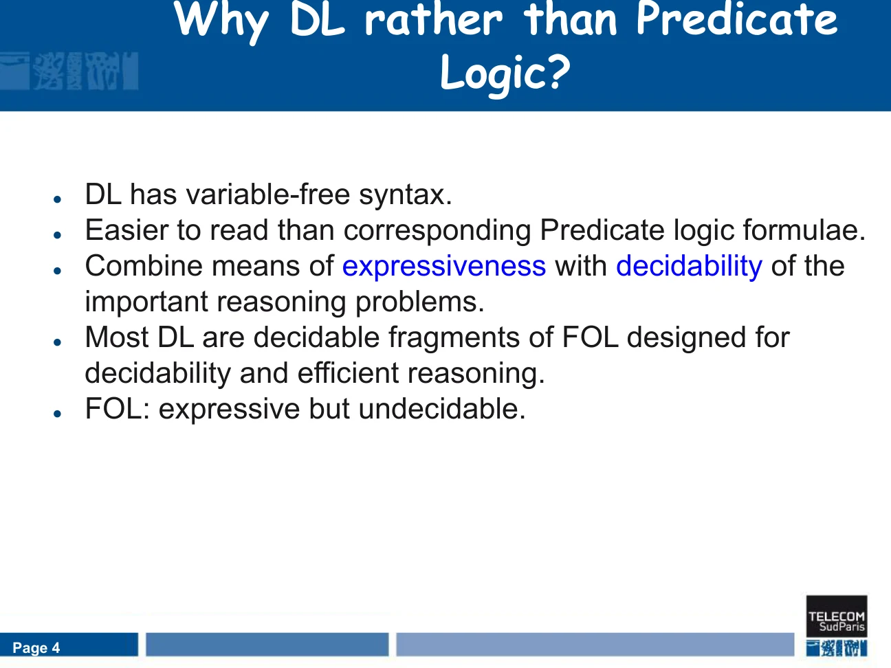
Slide text
Why DL rather than Predicate Logic? ●DL has variable-free syntax. ●Easier to read than corresponding Predicate logic formulae. ●Combine means of expressiveness with decidability of the important reasoning problems. ●Most DL are decidable fragments of FOL designed for decidability and efficient reasoning. ●FOL: expressive but undecidable. Page 4
Slide 5 / 65
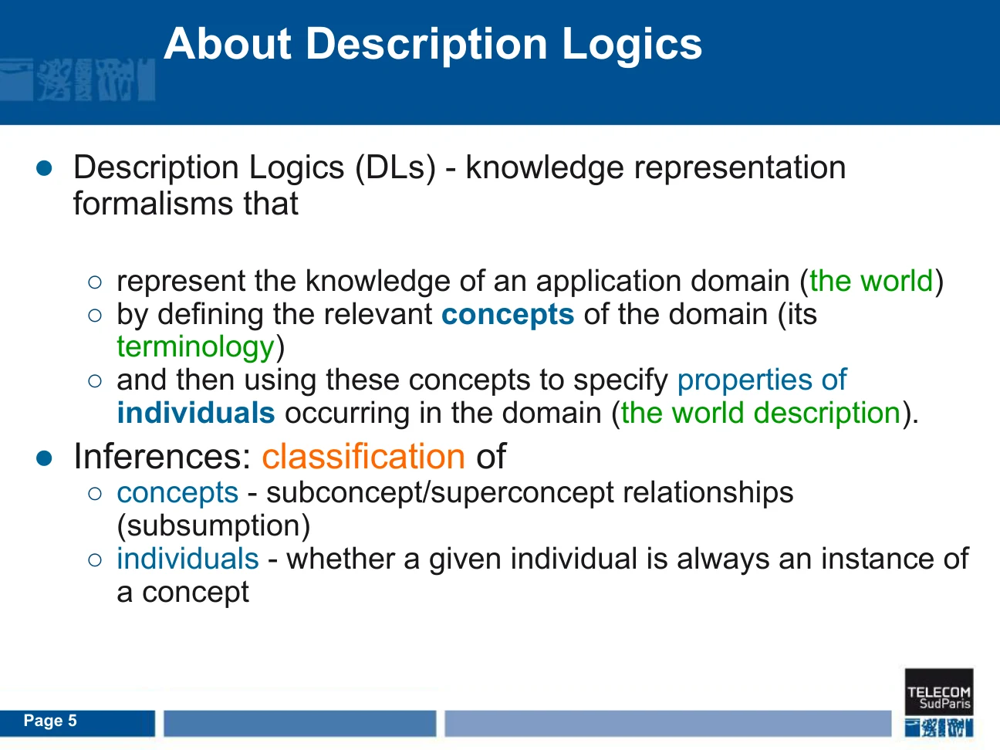
Slide text
About Description Logics ●Description Logics (DLs) - knowledge representation formalisms that ○represent the knowledge of an application domain (the world) ○by defining the relevant concepts of the domain (its terminology) ○and then using these concepts to specify properties of individuals occurring in the domain (the world description). ●Inferences: classification of ○concepts - subconcept/superconcept relationships (subsumption) ○individuals - whether a given individual is always an instance of a concept Page 5
Slide 6 / 65
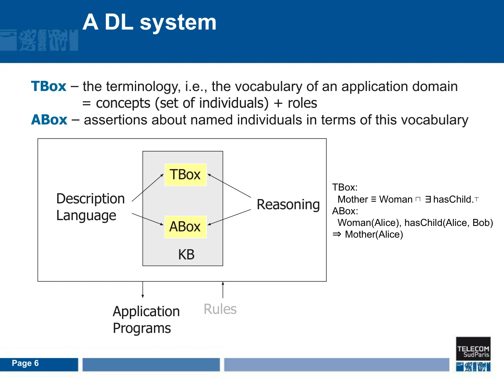
Slide text
A DL system Page 6 TBox – the terminology, i.e., the vocabulary of an application domain = concepts (set of individuals) + roles ABox – assertions about named individuals in terms of this vocabulary 6 TBox ABox Description Language Reasoning KB Application Programs Rules TBox: Mother ≡ Woman ⊓ ∃hasChild.⊤ ABox: Woman(Alice), hasChild(Alice, Bob) ⇒ Mother(Alice)
Slide 7 / 65
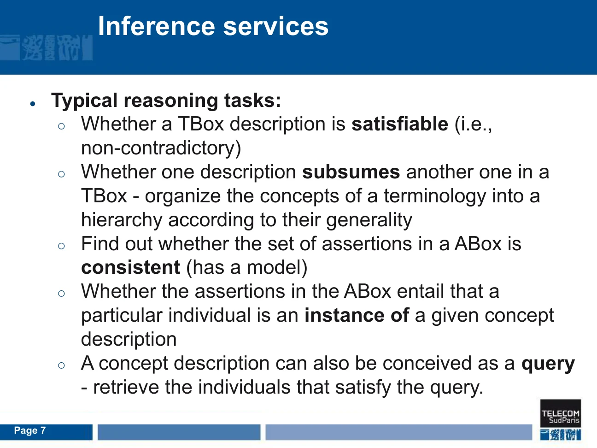
Slide text
Inference services ●Typical reasoning tasks: ○Whether a TBox description is satisfiable (i.e., non-contradictory) ○Whether one description subsumes another one in a TBox - organize the concepts of a terminology into a hierarchy according to their generality ○Find out whether the set of assertions in a ABox is consistent (has a model) ○Whether the assertions in the ABox entail that a particular individual is an instance of a given concept description ○A concept description can also be conceived as a query - retrieve the individuals that satisfy the query. Page 7
Slide 8 / 65
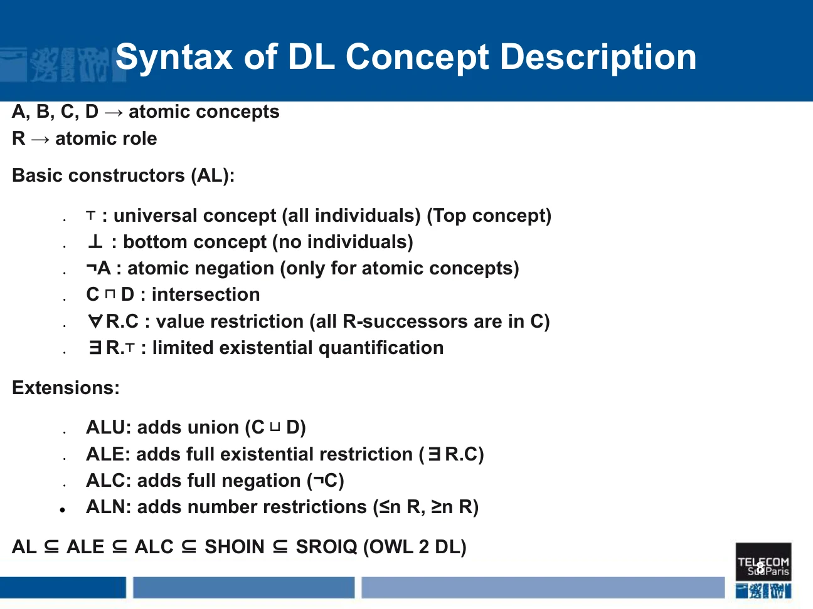
Slide text
Syntax of DL Concept Description A, B, C, D → atomic concepts R → atomic role Basic constructors (AL): ● ⊤ : universal concept (all individuals) (Top concept) ● ⊥ : bottom concept (no individuals) ● ¬A : atomic negation (only for atomic concepts) ● C ⊓ D : intersection ● ∀R.C : value restriction (all R-successors are in C) ● ∃R.⊤ : limited existential quantification Extensions: ● ALU: adds union (C ⊔ D) ● ALE: adds full existential restriction (∃R.C) ● ALC: adds full negation (¬C) ● ALN: adds number restrictions (≤n R, ≥n R) AL ⊆ ALE ⊆ ALC ⊆ SHOIN ⊆ SROIQ (OWL 2 DL) 8
Slide 9 / 65
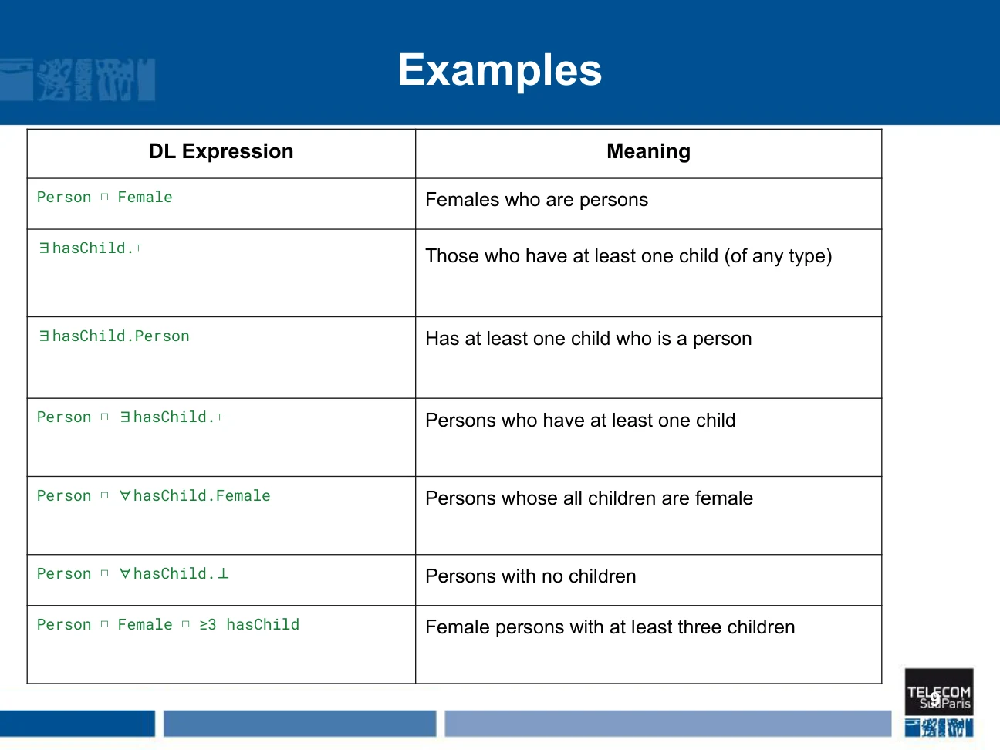
Slide text
Examples 9 DL Expression Meaning Person ⊓ Female Females who are persons ∃hasChild.⊤ Those who have at least one child (of any type) ∃hasChild.Person Has at least one child who is a person Person ⊓ ∃hasChild.⊤ Persons who have at least one child Person ⊓ ∀hasChild.Female Persons whose all children are female Person ⊓ ∀hasChild.⊥ Persons with no children Person ⊓ Female ⊓ ≥3 hasChild Female persons with at least three children
Slide 10 / 65
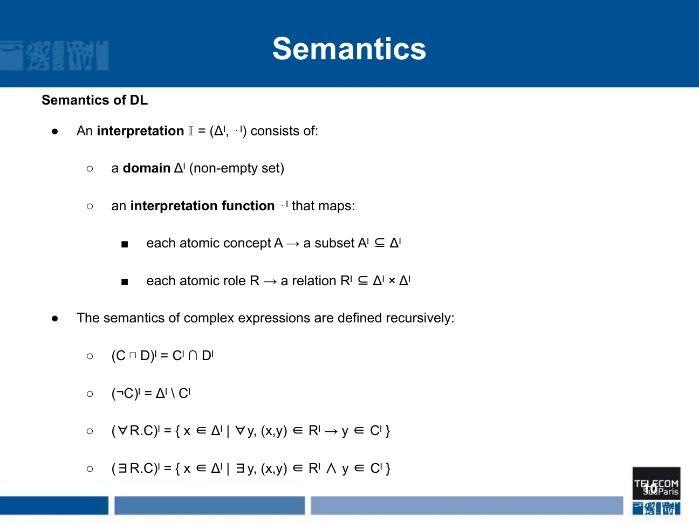
Slide text
Semantics
Semantics of DL
●
An interpretation 𝕀 = (Δᴵ, ⋅ᴵ) consists of:
○
a domain Δᴵ (non-empty set)
○
an interpretation function ⋅ᴵ that maps:
■
each atomic concept A → a subset Aᴵ ⊆ Δᴵ
■
each atomic role R → a relation Rᴵ ⊆ Δᴵ × Δᴵ
●
The semantics of complex expressions are defined recursively:
○
(C ⊓ D)ᴵ = Cᴵ ∩ Dᴵ
○
(¬C)ᴵ = Δᴵ \ Cᴵ
○
(∀R.C)ᴵ = { x ∈ Δᴵ | ∀y, (x,y) ∈ Rᴵ → y ∈ Cᴵ }
○
(∃R.C)ᴵ = { x ∈ Δᴵ | ∃y, (x,y) ∈ Rᴵ ∧ y ∈ Cᴵ }
10
Slide 11 / 65
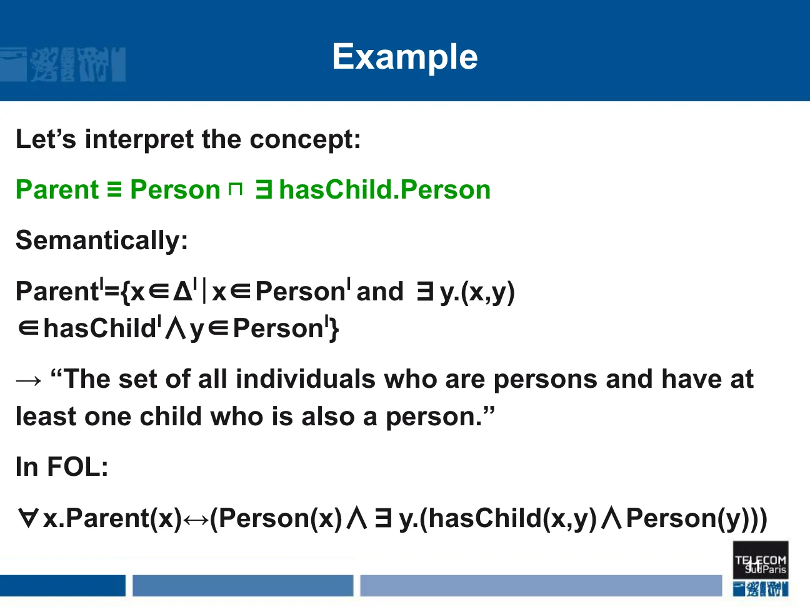
Slide text
Example
Let’s interpret the concept:
Parent ≡ Person ⊓ ∃hasChild.Person
Semantically:
ParentI={x∈ΔI∣x∈PersonI and ∃y.(x,y)
∈hasChildI∧y∈PersonI}
→ “The set of all individuals who are persons and have at
least one child who is also a person.”
In FOL:
∀x.Parent(x)↔(Person(x)∧∃y.(hasChild(x,y)∧Person(y)))
11
Slide 12 / 65
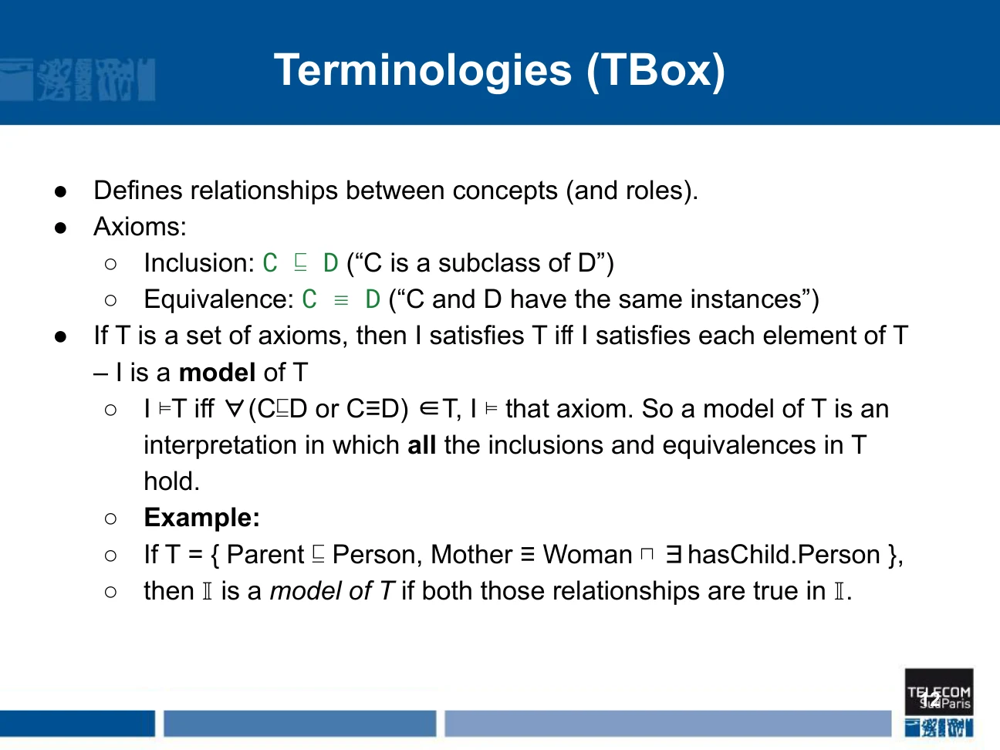
Slide text
Terminologies (TBox)
●
Defines relationships between concepts (and roles).
●
Axioms:
○
Inclusion: C ⊑ D (“C is a subclass of D”)
○
Equivalence: C ≡ D (“C and D have the same instances”)
●
If T is a set of axioms, then I satisfies T iff I satisfies each element of T
– I is a model of T
○
I ⊨T iff ∀(C⊑D or C≡D) ∈T, I ⊨ that axiom. So a model of T is an
interpretation in which all the inclusions and equivalences in T
hold.
○
Example:
○
If T = { Parent ⊑ Person, Mother ≡ Woman ⊓ ∃hasChild.Person },
○
then 𝕀 is a model of T if both those relationships are true in 𝕀.
12
Slide 13 / 65
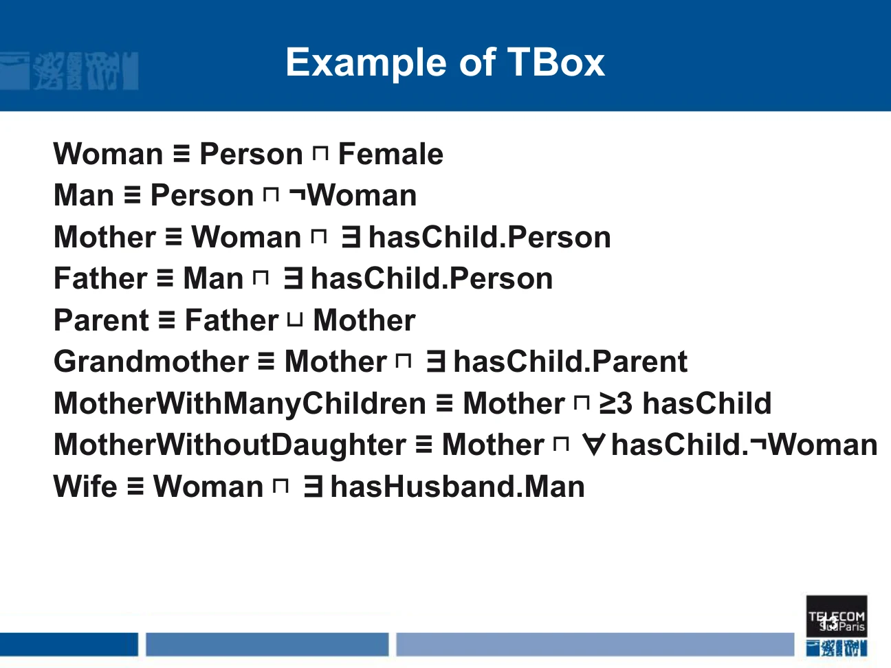
Slide text
Example of TBox Woman ≡ Person ⊓ Female Man ≡ Person ⊓ ¬Woman Mother ≡ Woman ⊓ ∃hasChild.Person Father ≡ Man ⊓ ∃hasChild.Person Parent ≡ Father ⊔ Mother Grandmother ≡ Mother ⊓ ∃hasChild.Parent MotherWithManyChildren ≡ Mother ⊓ ≥3 hasChild MotherWithoutDaughter ≡ Mother ⊓ ∀hasChild.¬Woman Wife ≡ Woman ⊓ ∃hasHusband.Man 13
Slide 14 / 65
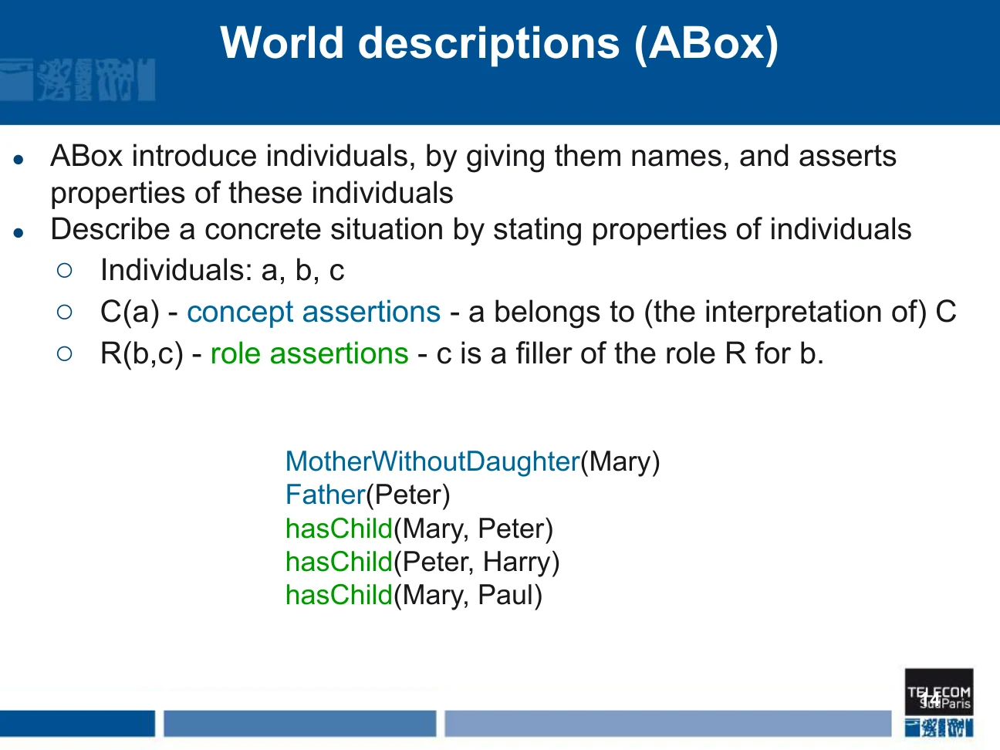
Slide text
World descriptions (ABox) ● ABox introduce individuals, by giving them names, and asserts properties of these individuals ● Describe a concrete situation by stating properties of individuals ○ Individuals: a, b, c ○ C(a) - concept assertions - a belongs to (the interpretation of) C ○ R(b,c) - role assertions - c is a filler of the role R for b. 14 MotherWithoutDaughter(Mary) Father(Peter) hasChild(Mary, Peter) hasChild(Peter, Harry) hasChild(Mary, Paul)
Slide 15 / 65
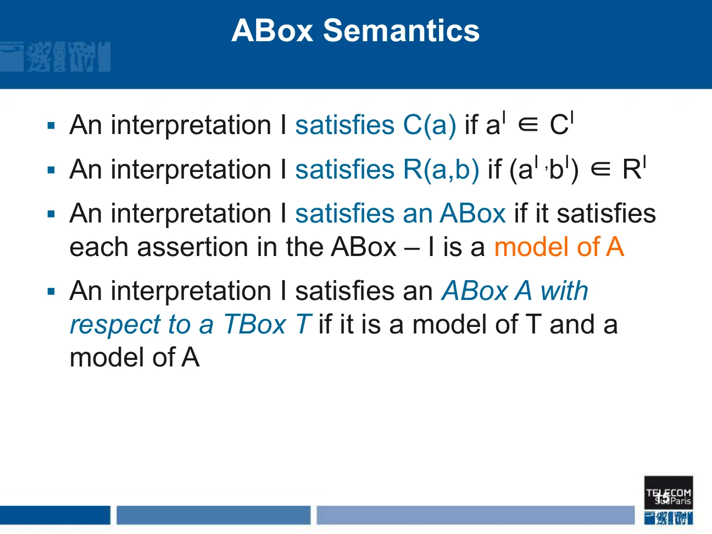
Slide text
ABox Semantics ▪An interpretation I satisfies C(a) if aI ∈ CI ▪An interpretation I satisfies R(a,b) if (aI ,bI) ∈ RI ▪An interpretation I satisfies an ABox if it satisfies each assertion in the ABox – I is a model of A ▪An interpretation I satisfies an ABox A with respect to a TBox T if it is a model of T and a model of A 15
Slide 16 / 65
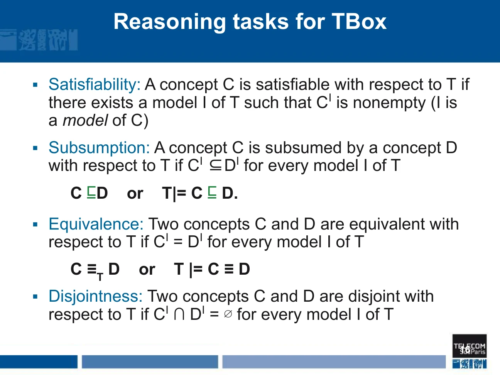
Slide text
Reasoning tasks for TBox ▪Satisfiability: A concept C is satisfiable with respect to T if there exists a model I of T such that CI is nonempty (I is a model of C) ▪Subsumption: A concept C is subsumed by a concept D with respect to T if CI ⊆DI for every model I of T C ⊑D or T|= C ⊑ D. ▪Equivalence: Two concepts C and D are equivalent with respect to T if CI = DI for every model I of T C ≡T D or T |= C ≡ D ▪Disjointness: Two concepts C and D are disjoint with respect to T if CI ∩ DI = ∅ for every model I of T 16
Slide 17 / 65
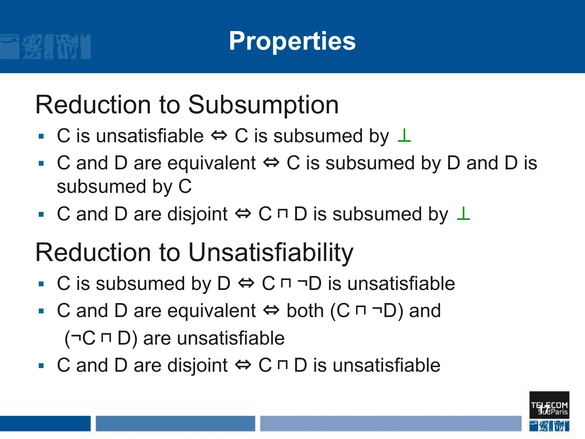
Slide text
Properties Reduction to Subsumption ▪C is unsatisfiable ⇔ C is subsumed by ⊥ ▪C and D are equivalent ⇔ C is subsumed by D and D is subsumed by C ▪C and D are disjoint ⇔ C ⊓ D is subsumed by ⊥ Reduction to Unsatisfiability ▪C is subsumed by D ⇔ C ⊓ ¬D is unsatisfiable ▪C and D are equivalent ⇔ both (C ⊓ ¬D) and (¬C ⊓ D) are unsatisfiable ▪C and D are disjoint ⇔ C ⊓ D is unsatisfiable 17
Slide 18 / 65
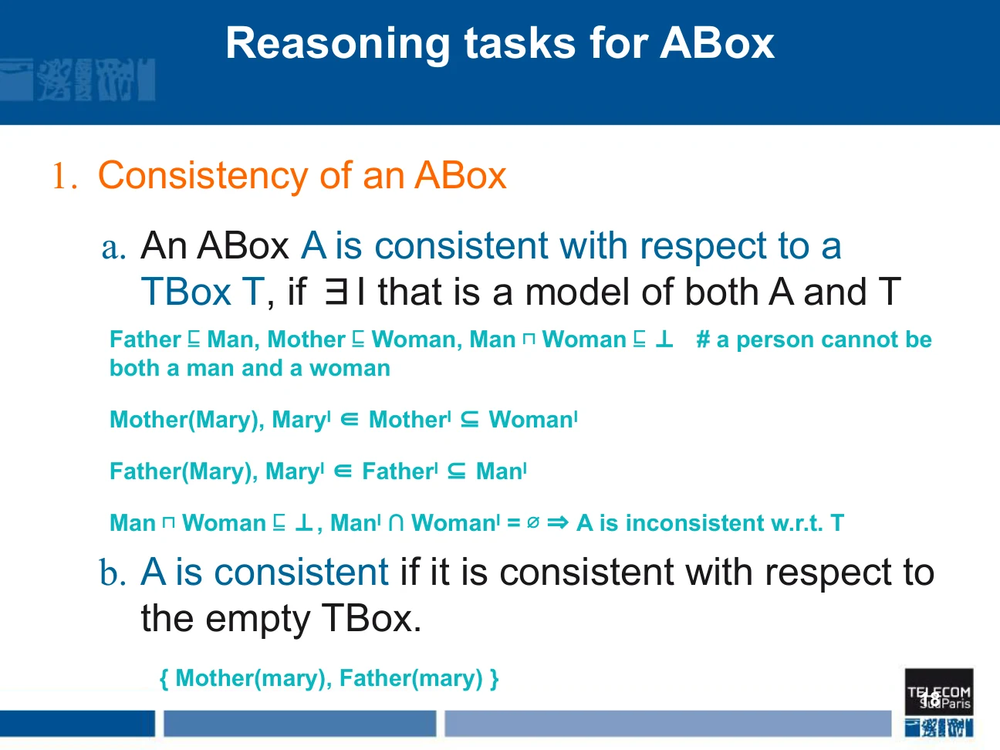
Slide text
Reasoning tasks for ABox
1. Consistency of an ABox
a. An ABox A is consistent with respect to a
TBox T, if ∃I that is a model of both A and T
b. A is consistent if it is consistent with respect to
the empty TBox.
{ Mother(mary), Father(mary) }
18
Father ⊑ Man, Mother ⊑ Woman, Man ⊓ Woman ⊑ ⊥ # a person cannot be
both a man and a woman
Mother(Mary), Maryᴵ ∈ Motherᴵ ⊆ Womanᴵ
Father(Mary), Maryᴵ ∈ Fatherᴵ ⊆ Manᴵ
Man ⊓ Woman ⊑ ⊥, Manᴵ ∩ Womanᴵ = ∅ ⇒ A is inconsistent w.r.t. T
Slide 19 / 65
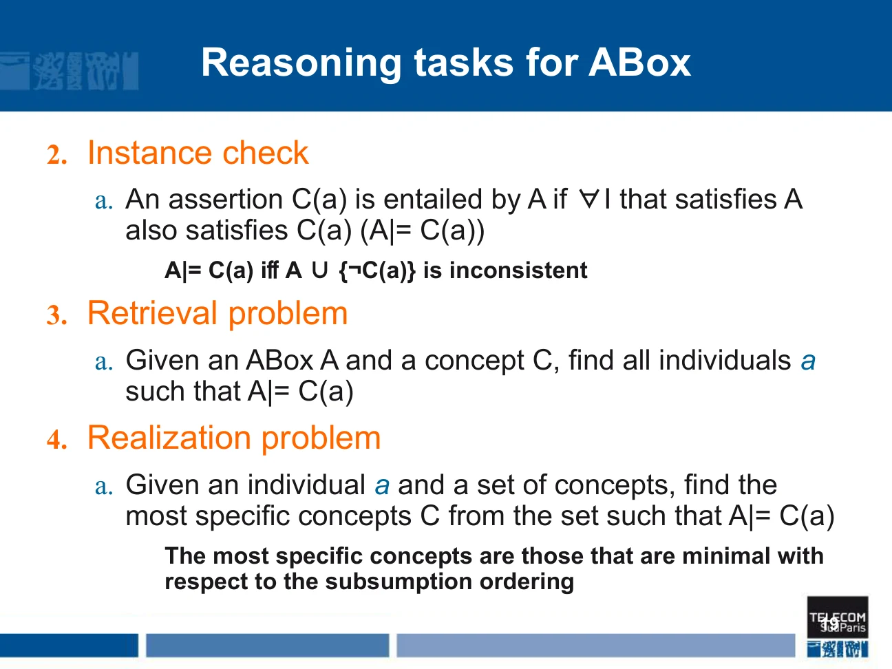
Slide text
Reasoning tasks for ABox
2. Instance check
a. An assertion C(a) is entailed by A if ∀I that satisfies A
also satisfies C(a) (A|= C(a))
A|= C(a) iff A ∪ {¬C(a)} is inconsistent
3. Retrieval problem
a. Given an ABox A and a concept C, find all individuals a
such that A|= C(a)
4. Realization problem
a. Given an individual a and a set of concepts, find the
most specific concepts C from the set such that A|= C(a)
The most specific concepts are those that are minimal with
respect to the subsumption ordering
19
Slide 20 / 65
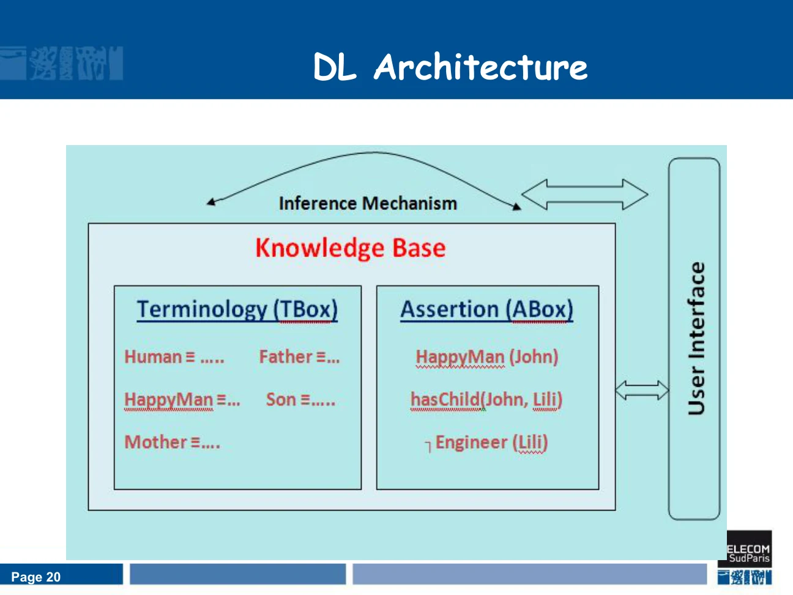
Slide text
DL Architecture Page 20
Slide 21 / 65
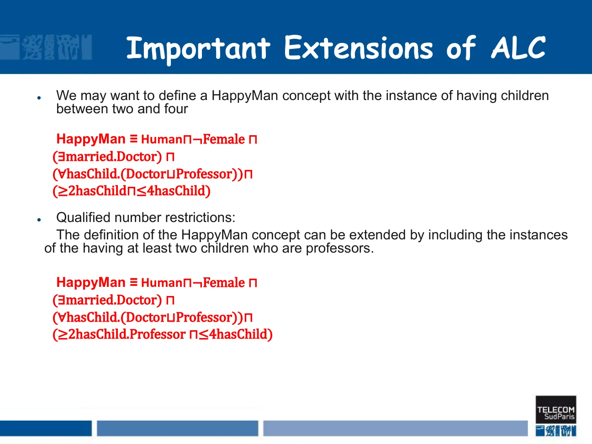
Slide text
Important Extensions of ALC ● We may want to define a HappyMan concept with the instance of having children between two and four HappyMan ≡ Human⊓¬Female ⊓ (∃married.Doctor) ⊓ (∀hasChild.(Doctor⊔Professor))⊓ (≥2hasChild⊓≤4hasChild) ● Qualified number restrictions: The definition of the HappyMan concept can be extended by including the instances of the having at least two children who are professors. HappyMan ≡ Human⊓¬Female ⊓ (∃married.Doctor) ⊓ (∀hasChild.(Doctor⊔Professor))⊓ (≥2hasChild.Professor ⊓≤4hasChild)
Slide 22 / 65
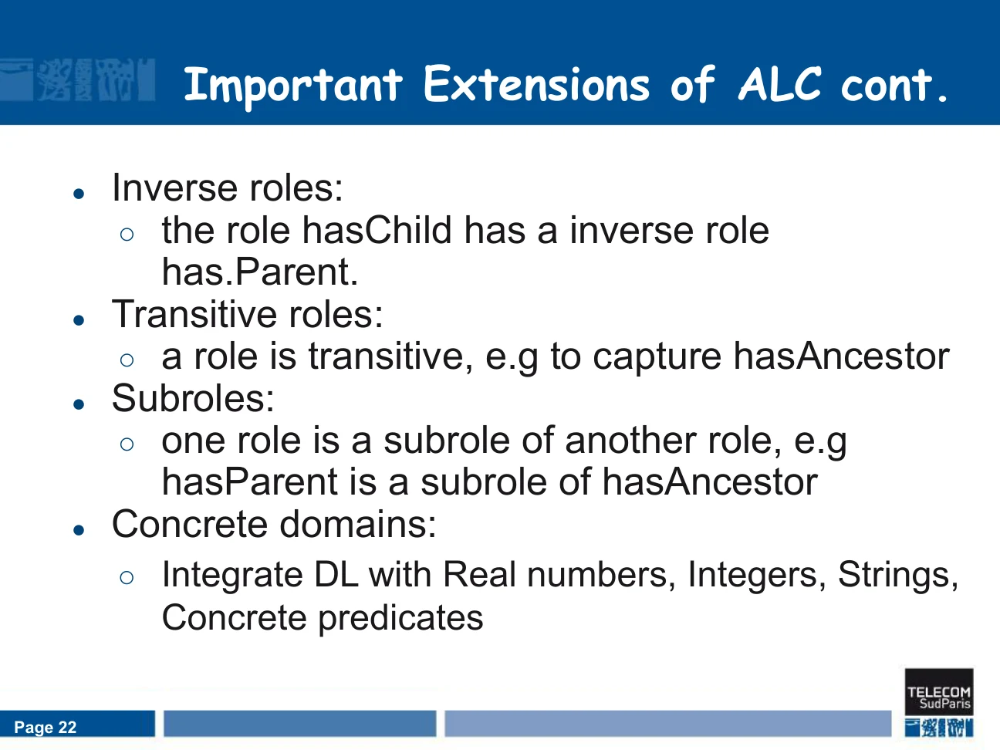
Slide text
Important Extensions of ALC cont. ●Inverse roles: ○the role hasChild has a inverse role has.Parent. ●Transitive roles: ○a role is transitive, e.g to capture hasAncestor ●Subroles: ○one role is a subrole of another role, e.g hasParent is a subrole of hasAncestor ●Concrete domains: ○Integrate DL with Real numbers, Integers, Strings, Concrete predicates Page 22
Slide 23 / 65
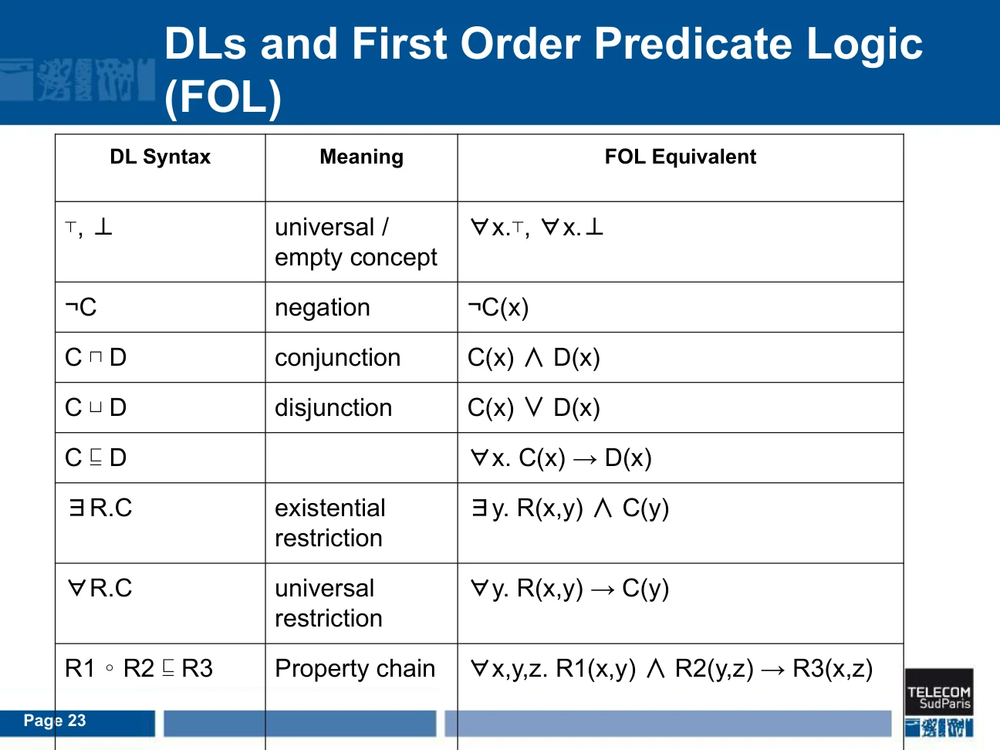
Slide text
DLs and First Order Predicate Logic (FOL) Page 23 DL Syntax Meaning FOL Equivalent ⊤, ⊥ universal / empty concept ∀x.⊤, ∀x.⊥ ¬C negation ¬C(x) C ⊓ D conjunction C(x) ∧ D(x) C ⊔ D disjunction C(x) ∨ D(x) C ⊑ D ∀x. C(x) → D(x) ∃R.C existential restriction ∃y. R(x,y) ∧ C(y) ∀R.C universal restriction ∀y. R(x,y) → C(y) R1 ∘ R2 ⊑ R3 Property chain ∀x,y,z. R1(x,y) ∧ R2(y,z) → R3(x,z)
Slide 24 / 65
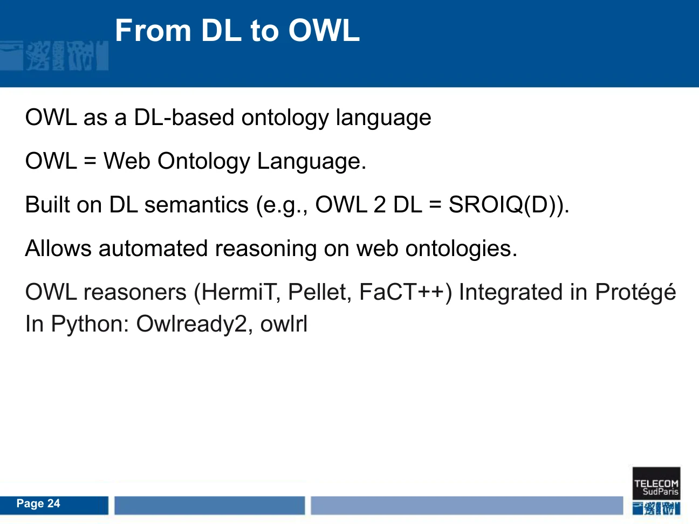
Slide text
From DL to OWL OWL as a DL-based ontology language OWL = Web Ontology Language. Built on DL semantics (e.g., OWL 2 DL = SROIQ(D)). Allows automated reasoning on web ontologies. OWL reasoners (HermiT, Pellet, FaCT++) Integrated in Protégé In Python: Owlready2, owlrl Page 24
Slide 25 / 65
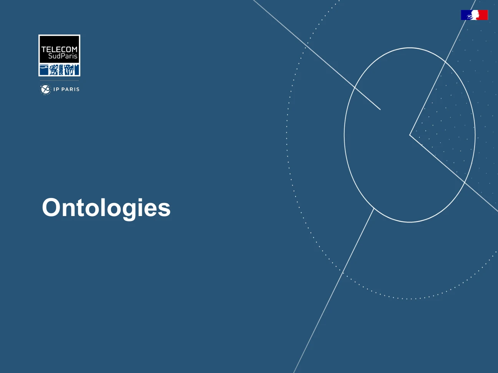
Slide text
Ontologies
Slide 26 / 65
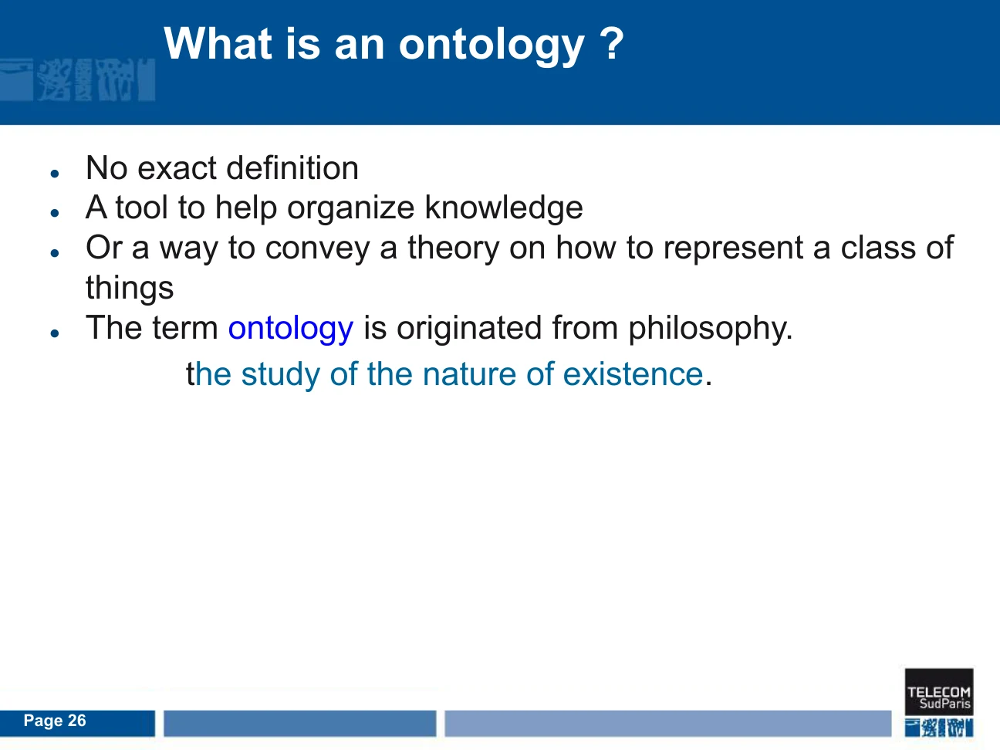
Slide text
What is an ontology ? ●No exact definition ●A tool to help organize knowledge ●Or a way to convey a theory on how to represent a class of things ●The term ontology is originated from philosophy. the study of the nature of existence. Page 26
Slide 27 / 65
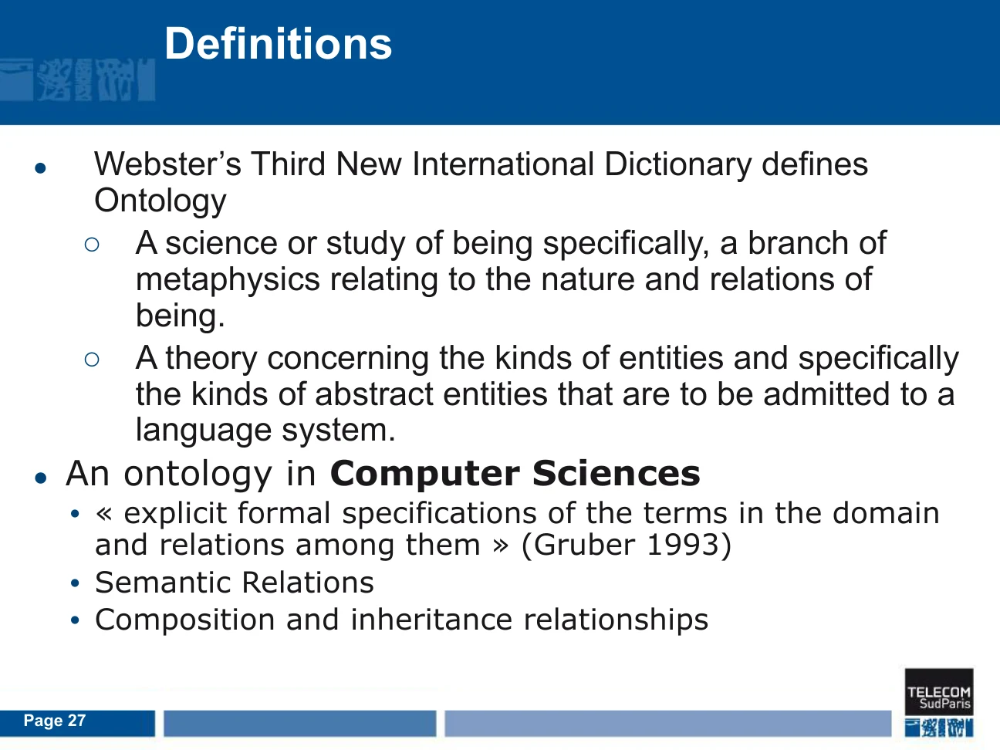
Slide text
Definitions ● Webster’s Third New International Dictionary defines Ontology ○ A science or study of being specifically, a branch of metaphysics relating to the nature and relations of being. ○ A theory concerning the kinds of entities and specifically the kinds of abstract entities that are to be admitted to a language system. ●An ontology in Computer Sciences • « explicit formal specifications of the terms in the domain and relations among them » (Gruber 1993) • Semantic Relations • Composition and inheritance relationships Page 27
Slide 28 / 65
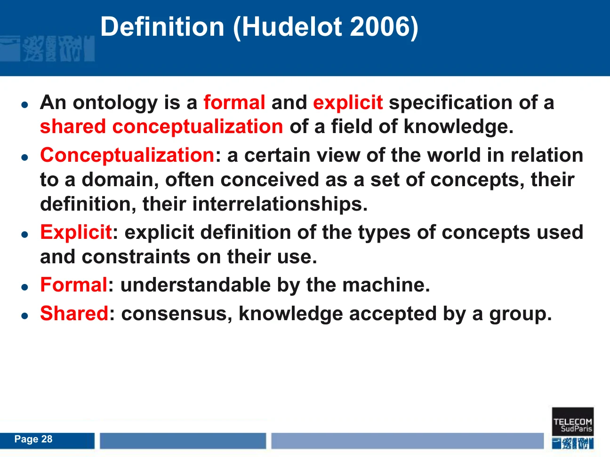
Slide text
Definition (Hudelot 2006) ●An ontology is a formal and explicit specification of a shared conceptualization of a field of knowledge. ●Conceptualization: a certain view of the world in relation to a domain, often conceived as a set of concepts, their definition, their interrelationships. ●Explicit: explicit definition of the types of concepts used and constraints on their use. ●Formal: understandable by the machine. ●Shared: consensus, knowledge accepted by a group. Page 28
Slide 29 / 65
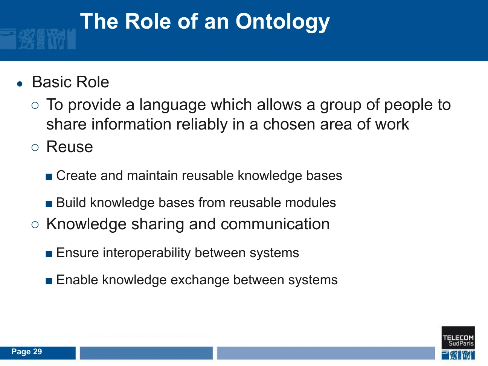
Slide text
The Role of an Ontology ●Basic Role ○To provide a language which allows a group of people to share information reliably in a chosen area of work ○Reuse ■Create and maintain reusable knowledge bases ■Build knowledge bases from reusable modules ○Knowledge sharing and communication ■Ensure interoperability between systems ■Enable knowledge exchange between systems Page 29
Slide 30 / 65
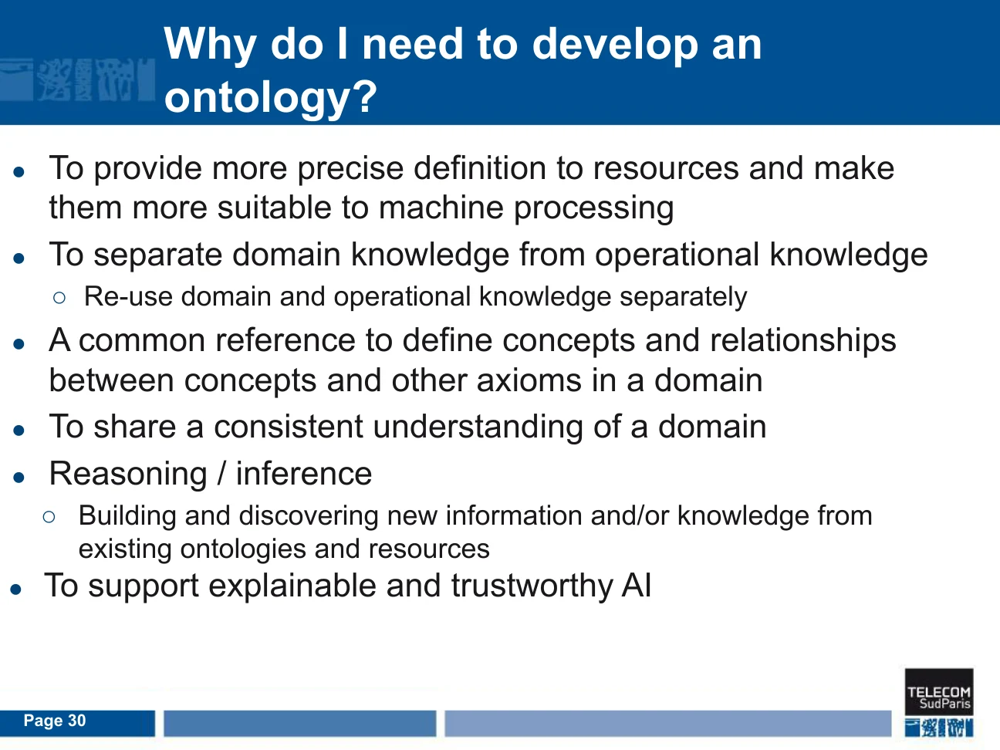
Slide text
Why do I need to develop an ontology? ●To provide more precise definition to resources and make them more suitable to machine processing ●To separate domain knowledge from operational knowledge ○Re-use domain and operational knowledge separately ●A common reference to define concepts and relationships between concepts and other axioms in a domain ●To share a consistent understanding of a domain ●Reasoning / inference ○Building and discovering new information and/or knowledge from existing ontologies and resources ●To support explainable and trustworthy AI Page 30
Slide 31 / 65
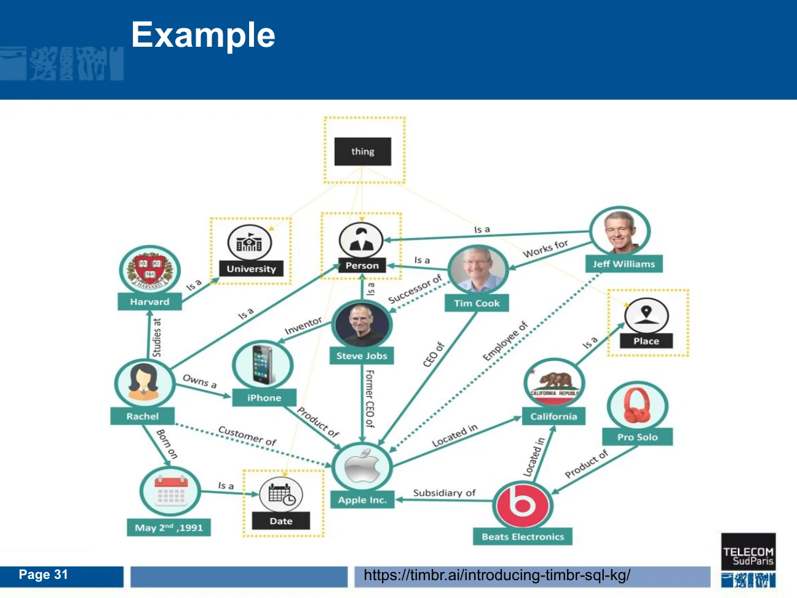
Slide text
Example Page 31 https://timbr.ai/introducing-timbr-sql-kg/
Slide 32 / 65
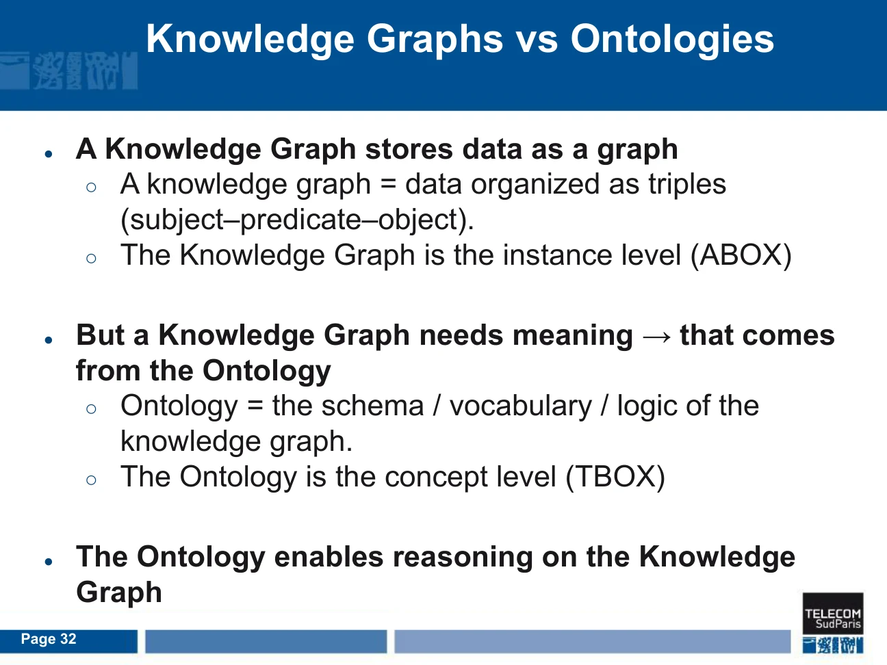
Slide text
Knowledge Graphs vs Ontologies ●A Knowledge Graph stores data as a graph ○A knowledge graph = data organized as triples (subject–predicate–object). ○The Knowledge Graph is the instance level (ABOX) ●But a Knowledge Graph needs meaning → that comes from the Ontology ○Ontology = the schema / vocabulary / logic of the knowledge graph. ○The Ontology is the concept level (TBOX) ●The Ontology enables reasoning on the Knowledge Graph Page 32
Slide 33 / 65
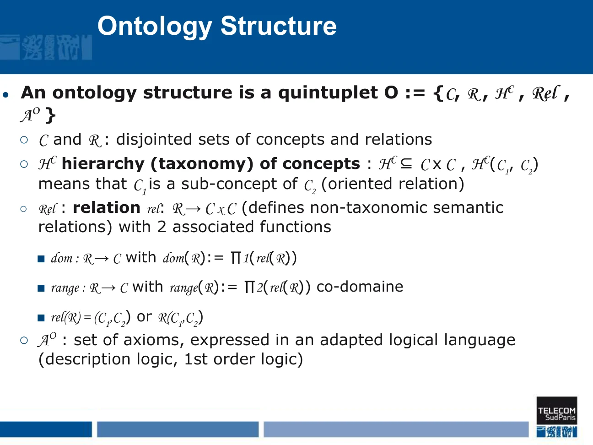
Slide text
●An ontology structure is a quintuplet O := {C, R , HC , Rel ,
AO }
○C and R : disjointed sets of concepts and relations
○HC hierarchy (taxonomy) of concepts : HC ⊆ C x C , HC(C1, C2)
means that C1 is a sub-concept of C2 (oriented relation)
○Rel : relation rel: R → C x C (defines non-taxonomic semantic
relations) with 2 associated functions
■dom : R → C with dom(R):= ∏1(rel(R))
■range : R → C with range(R):= ∏2(rel(R)) co-domaine
■rel(R) = (C1,C2) or R(C1,C2)
○AO : set of axioms, expressed in an adapted logical language
(description logic, 1st order logic)
Ontology Structure
Slide 34 / 65
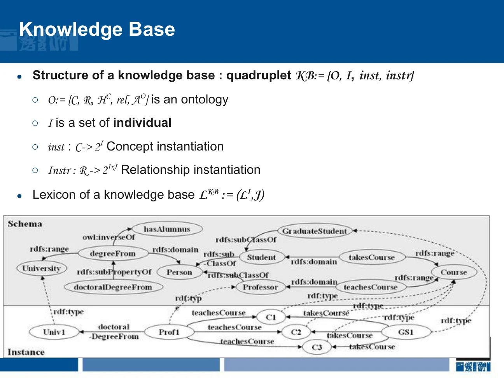
Slide text
Knowledge Base
●
Structure of a knowledge base : quadruplet KB:= {O, I, inst, instr}
○O:= {C, R, HC, rel, AO} is an ontology
○I is a set of individual
○inst : C-> 2I Concept instantiation
○Instr : R -> 2IxI Relationship instantiation
●
Lexicon of a knowledge base LKB := (LI,J)
Slide 35 / 65
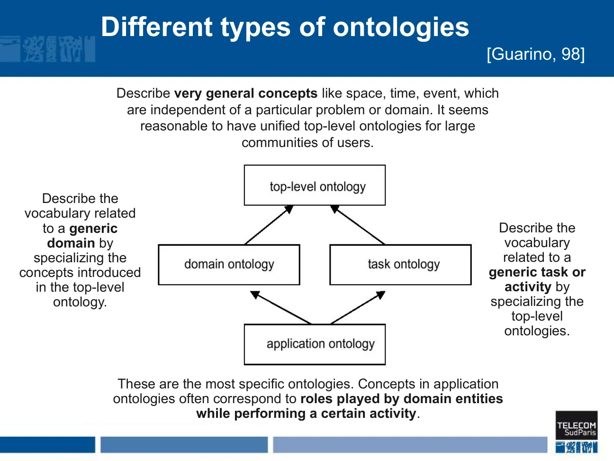
Slide text
Different types of ontologies [Guarino, 98] Describe very general concepts like space, time, event, which are independent of a particular problem or domain. It seems reasonable to have unified top-level ontologies for large communities of users. Describe the vocabulary related to a generic domain by specializing the concepts introduced in the top-level ontology. Describe the vocabulary related to a generic task or activity by specializing the top-level ontologies. These are the most specific ontologies. Concepts in application ontologies often correspond to roles played by domain entities while performing a certain activity.
Slide 36 / 65
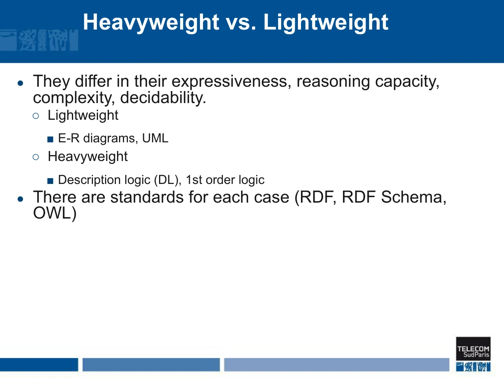
Slide text
Heavyweight vs. Lightweight ●They differ in their expressiveness, reasoning capacity, complexity, decidability. ○Lightweight ■E-R diagrams, UML ○Heavyweight ■Description logic (DL), 1st order logic ●There are standards for each case (RDF, RDF Schema, OWL)
Slide 37 / 65
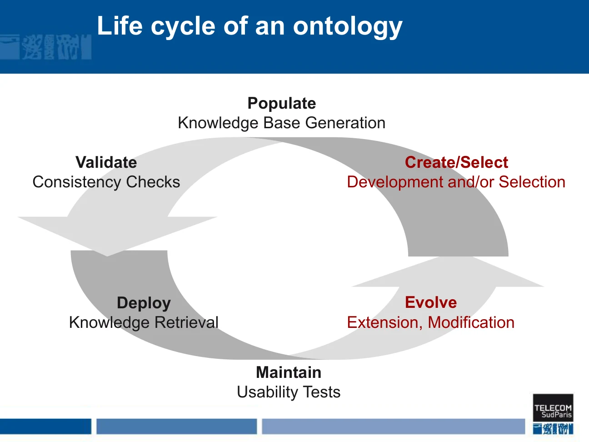
Slide text
Life cycle of an ontology Create/Select Development and/or Selection Populate Knowledge Base Generation Validate Consistency Checks Evolve Extension, Modification Maintain Usability Tests Deploy Knowledge Retrieval
Slide 38 / 65
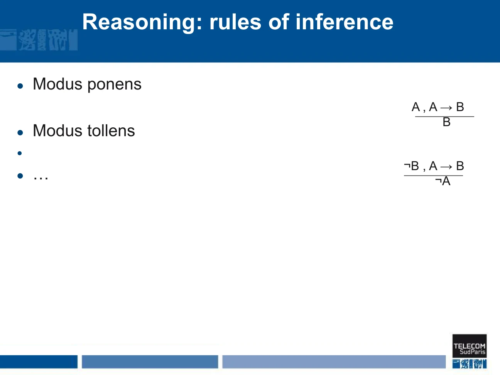
Slide text
Reasoning: rules of inference
●Modus ponens
●Modus tollens
●
●…
A , A → B
B
¬B , A → B
¬A
Slide 39 / 65
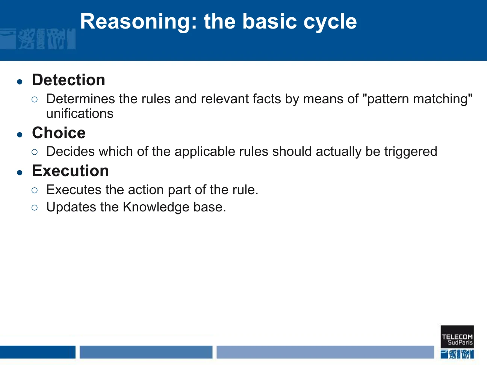
Slide text
Reasoning: the basic cycle ●Detection ○Determines the rules and relevant facts by means of "pattern matching" unifications ●Choice ○Decides which of the applicable rules should actually be triggered ●Execution ○Executes the action part of the rule. ○Updates the Knowledge base.
Slide 40 / 65
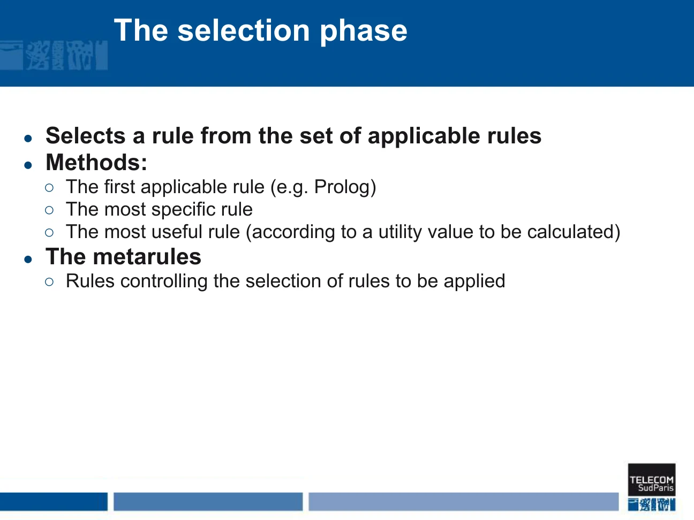
Slide text
The selection phase ●Selects a rule from the set of applicable rules ●Methods: ○The first applicable rule (e.g. Prolog) ○The most specific rule ○The most useful rule (according to a utility value to be calculated) ●The metarules ○Rules controlling the selection of rules to be applied
Slide 41 / 65
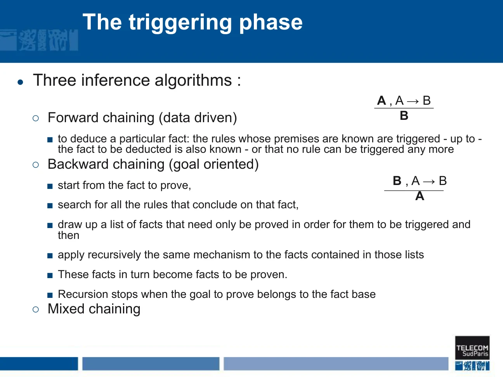
Slide text
The triggering phase ●Three inference algorithms : ○Forward chaining (data driven) ■to deduce a particular fact: the rules whose premises are known are triggered - up to - the fact to be deducted is also known - or that no rule can be triggered any more ○Backward chaining (goal oriented) ■start from the fact to prove, ■search for all the rules that conclude on that fact, ■draw up a list of facts that need only be proved in order for them to be triggered and then ■apply recursively the same mechanism to the facts contained in those lists ■These facts in turn become facts to be proven. ■Recursion stops when the goal to prove belongs to the fact base ○Mixed chaining A , A → B B B , A → B A
Slide 42 / 65
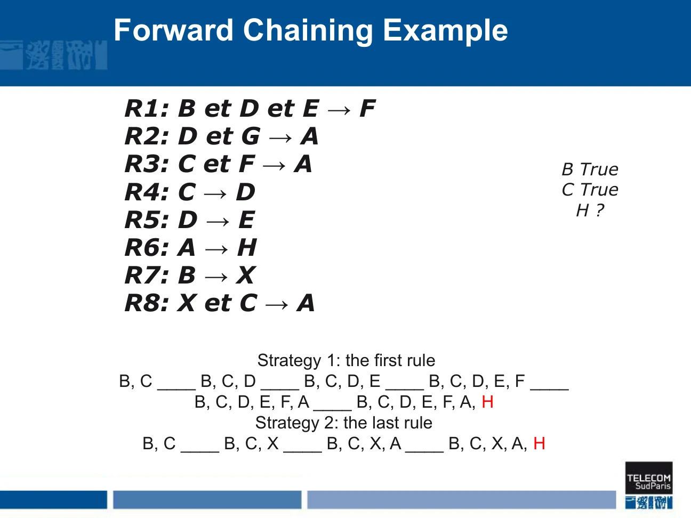
Slide text
Forward Chaining Example R1: B et D et E → F R2: D et G → A R3: C et F → A R4: C → D R5: D → E R6: A → H R7: B → X R8: X et C → A B True C True H ? Strategy 1: the first rule B, C ____ B, C, D ____ B, C, D, E ____ B, C, D, E, F ____ B, C, D, E, F, A ____ B, C, D, E, F, A, H Strategy 2: the last rule B, C ____ B, C, X ____ B, C, X, A ____ B, C, X, A, H
Slide 43 / 65
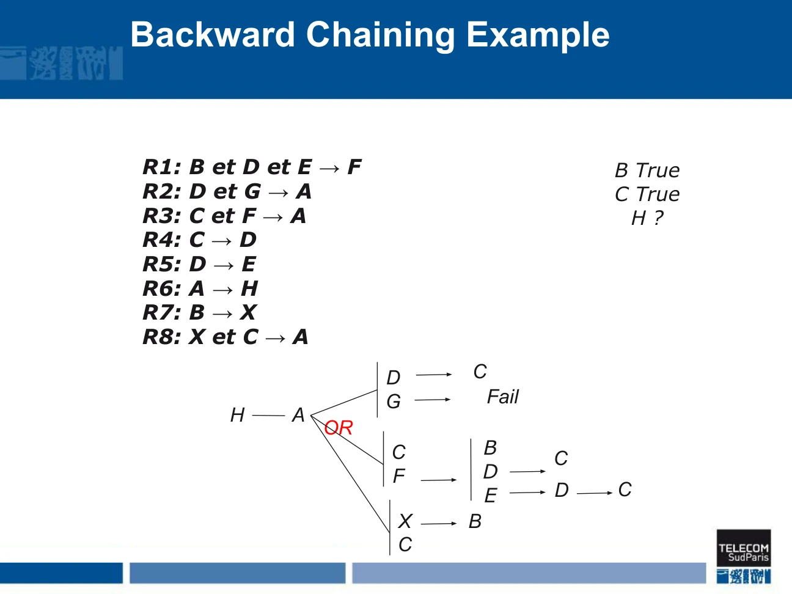
Slide text
Backward Chaining Example R1: B et D et E → F R2: D et G → A R3: C et F → A R4: C → D R5: D → E R6: A → H R7: B → X R8: X et C → A B True C True H ? B D E H D G OR C F X C C Fail C D C B A
Slide 44 / 65
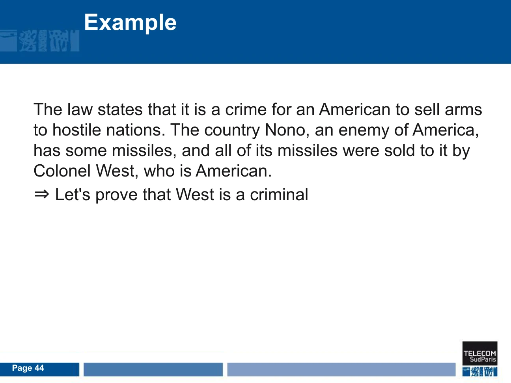
Slide text
Example The law states that it is a crime for an American to sell arms to hostile nations. The country Nono, an enemy of America, has some missiles, and all of its missiles were sold to it by Colonel West, who is American. ⇒ Let's prove that West is a criminal Page 44
Slide 45 / 65
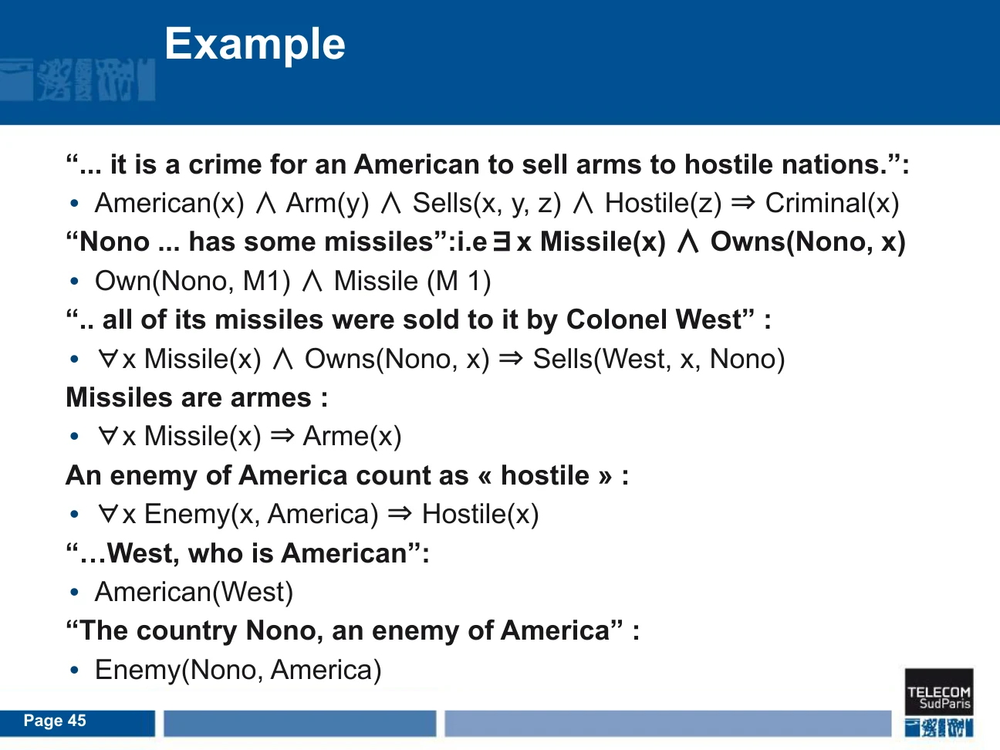
Slide text
Example “... it is a crime for an American to sell arms to hostile nations.”: • American(x) ∧ Arm(y) ∧ Sells(x, y, z) ∧ Hostile(z) ⇒ Criminal(x) “Nono ... has some missiles”:i.e∃x Missile(x) ∧ Owns(Nono, x) • Own(Nono, M1) ∧ Missile (M 1) “.. all of its missiles were sold to it by Colonel West” : • ∀x Missile(x) ∧ Owns(Nono, x) ⇒ Sells(West, x, Nono) Missiles are armes : • ∀x Missile(x) ⇒ Arme(x) An enemy of America count as « hostile » : • ∀x Enemy(x, America) ⇒ Hostile(x) “…West, who is American”: • American(West) “The country Nono, an enemy of America” : • Enemy(Nono, America) Page 45
Slide 46 / 65
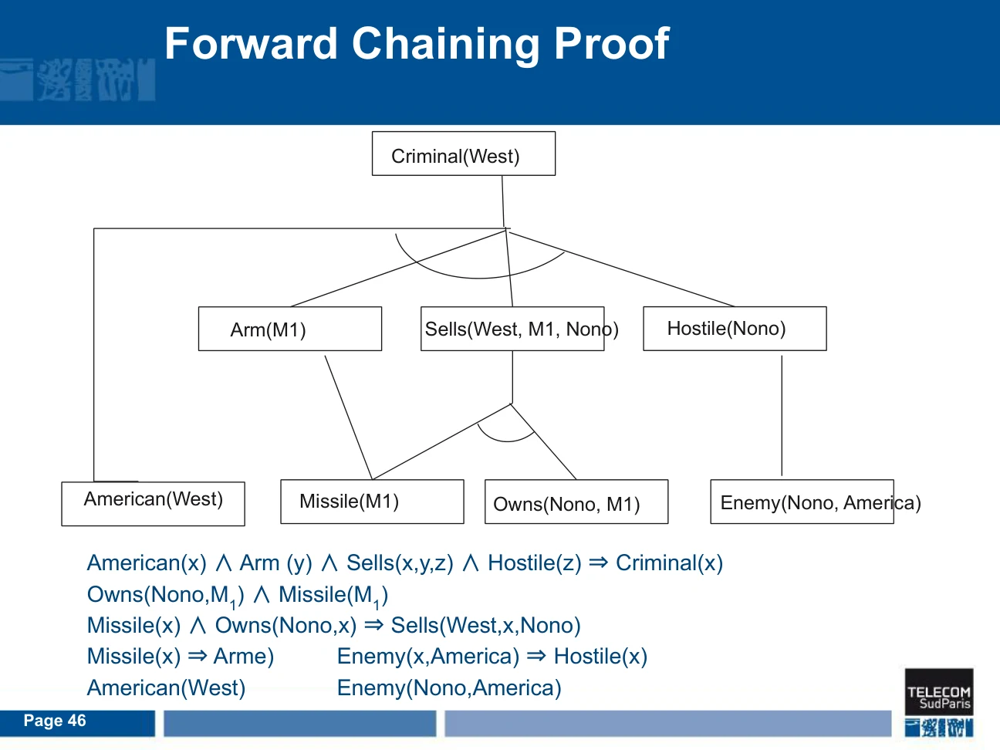
Slide text
Forward Chaining Proof Page 46 American(West) Missile(M1) Owns(Nono, M1) Enemy(Nono, America) Sells(West, M1, Nono) Hostile(Nono) Criminal(West) Arm(M1) American(x) ∧ Arm (y) ∧ Sells(x,y,z) ∧ Hostile(z) ⇒ Criminal(x) Owns(Nono,M1) ∧ Missile(M1) Missile(x) ∧ Owns(Nono,x) ⇒ Sells(West,x,Nono) Missile(x) ⇒ Arme) Enemy(x,America) ⇒ Hostile(x) American(West) Enemy(Nono,America)
Slide 47 / 65
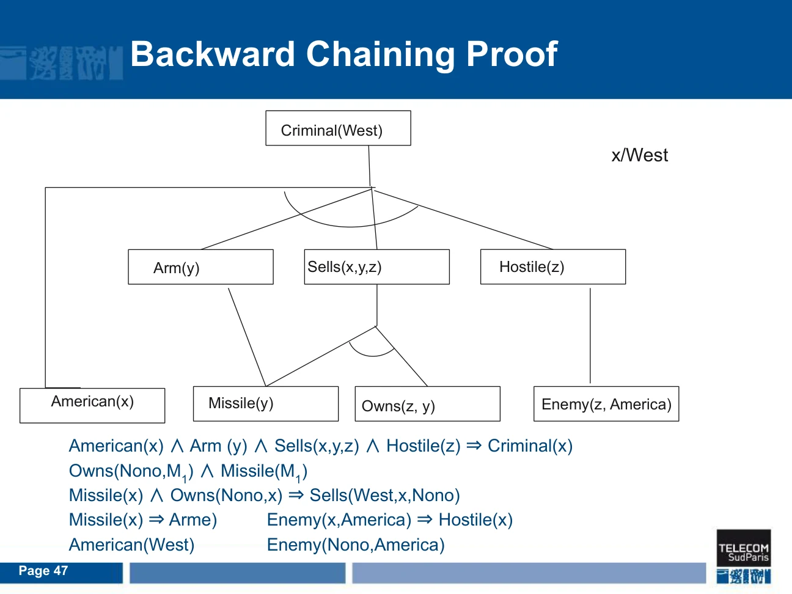
Slide text
Page 47 Backward Chaining Proof American(x) Missile(y) Owns(z, y) Enemy(z, America) Sells(x,y,z) Hostile(z) Criminal(West) Arm(y) x/West American(x) ∧ Arm (y) ∧ Sells(x,y,z) ∧ Hostile(z) ⇒ Criminal(x) Owns(Nono,M1) ∧ Missile(M1) Missile(x) ∧ Owns(Nono,x) ⇒ Sells(West,x,Nono) Missile(x) ⇒ Arme) Enemy(x,America) ⇒ Hostile(x) American(West) Enemy(Nono,America)
Slide 48 / 65
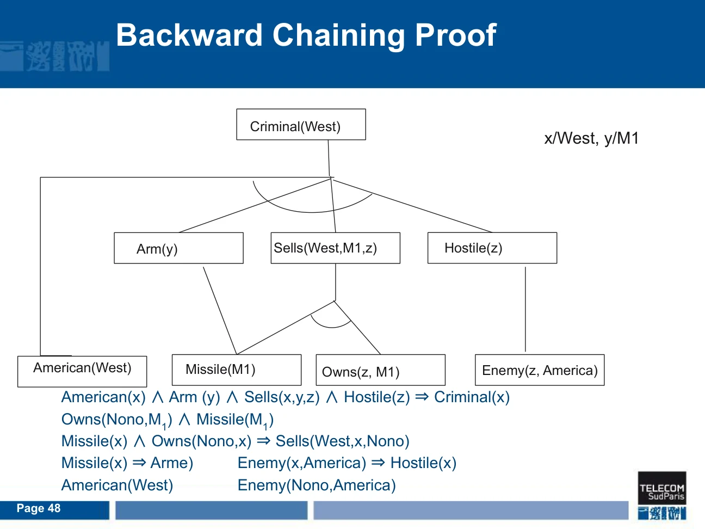
Slide text
Page 48 Backward Chaining Proof American(West) Missile(M1) Owns(z, M1) Enemy(z, America) Sells(West,M1,z) Hostile(z) Criminal(West) Arm(y) x/West, y/M1 American(x) ∧ Arm (y) ∧ Sells(x,y,z) ∧ Hostile(z) ⇒ Criminal(x) Owns(Nono,M1) ∧ Missile(M1) Missile(x) ∧ Owns(Nono,x) ⇒ Sells(West,x,Nono) Missile(x) ⇒ Arme) Enemy(x,America) ⇒ Hostile(x) American(West) Enemy(Nono,America)
Slide 49 / 65
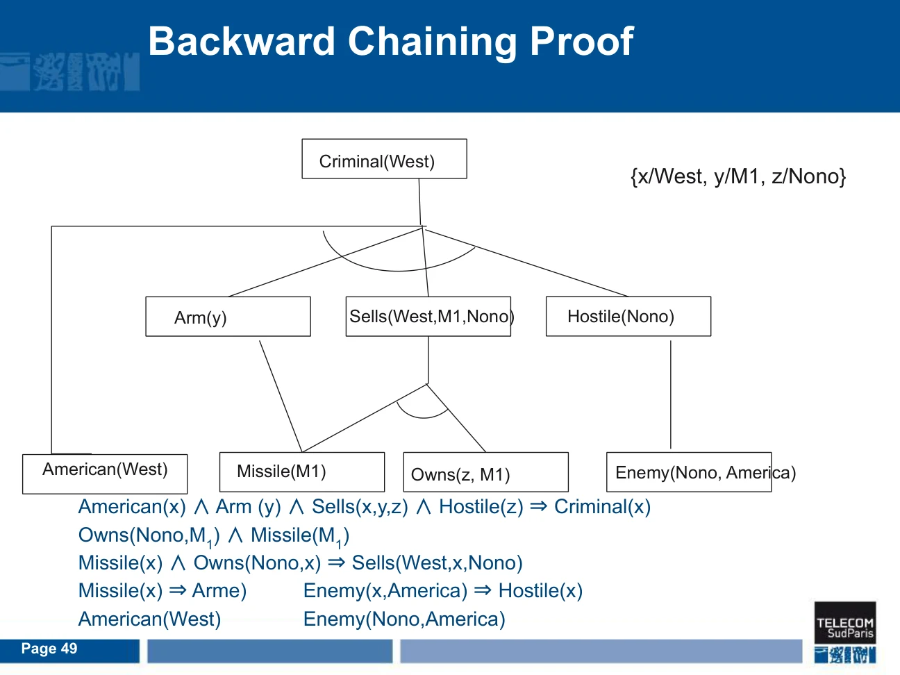
Slide text
Page 49
Backward Chaining Proof
American(West)
Missile(M1)
Owns(z, M1)
Enemy(Nono, America)
Sells(West,M1,Nono)
Hostile(Nono)
Criminal(West)
Arm(y)
{x/West, y/M1, z/Nono}
American(x) ∧ Arm (y) ∧ Sells(x,y,z) ∧ Hostile(z) ⇒ Criminal(x)
Owns(Nono,M1) ∧ Missile(M1)
Missile(x) ∧ Owns(Nono,x) ⇒ Sells(West,x,Nono)
Missile(x) ⇒ Arme)
Enemy(x,America) ⇒ Hostile(x)
American(West)
Enemy(Nono,America)
Slide 50 / 65
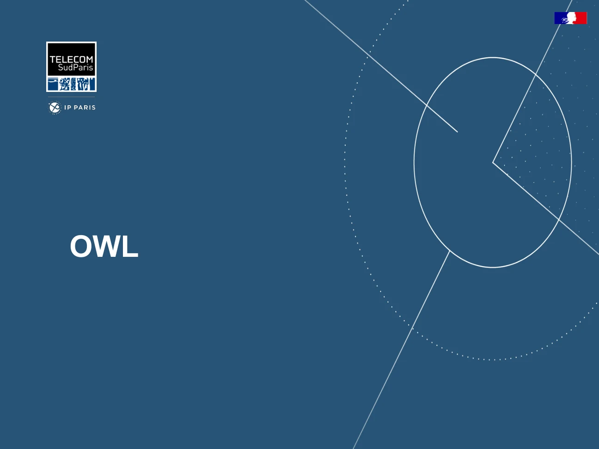
Slide text
OWL
Slide 51 / 65
Slide text
Introduction ●is based on research carried out in the field of description logic ●used to describe ontologies, i.e. it enables terminologies to be defined to describe concrete domains ●is an important step forward in the representation and organisation of knowledge available on the Web ●is designed as an extension of the Resource Description Framework (RDF) and RDF Schema (RDFS).
Slide 52 / 65
Slide text
Introduction ●RDF and RDFs alone are too limited : ○Cannot specify the nature of the relationships between resources (reflexivity, etc.) ○No capacity for reasoning ○Very limited logic ●The need for OWL : ○Derives from RDF + RDFS ○Logical connectors between classes (union, intersection, etc.) ○Cardinality on properties ○Characterization of properties (transitivity, inverse, etc.) OWL RDF + RDF Schema XML + Schema XML Metadata Syntax Logc
Slide 53 / 65
Slide text
Main advantages ●Brings better integration, evolution, sharing and easier inference of ontologies ●Adds the concepts of equivalent classes, equivalent properties, equality of two resources, their differences, the opposite, symmetry and cardinality ●Thanks to its formal semantics based on a widely studied logical foundation, allows to define more complex associations of resources as well as the properties of their respective classes ●Is suitable for the Semantic Web, as it offers a strictly defined syntax, and depending on the level can allow automated reasoning on knowledge inferences and conclusions
Slide 54 / 65
Slide text
OWL sub-languages OWL Lite OWL DL OWL Full
Slide 55 / 65
Slide text
Definition of OWL classes ●A class can be declared in several ways: ○By naming the class or, ○By enumeration of its individuals ○By restricting the properties of its individuals ○By intersection (AND), union (OR) or complement (NOT) of another class ==> Anonymous Classes: The members of an anonymous class are the set of Individuals that satisfy its logical definition ●There is an inheritance mechanism (<owl:subClassOf>) ●The superclass owl:Thing is the mother of all the other classes ●owl:Nothing is subclass of all classes ●In OWL Full, a class can be an instance of another class (a "metaclass"). ●The set of instances of a class is called "the extension".
Slide 56 / 65
Slide text
Restriction Types ∃ Existential, someValuesFrom “Some”, “At least one” ∀ Universal, allValuesFrom “Only” ∍ hasValue “equals x” = Cardinality “Exactly n” ≤ Max Cardinality “At most n” ≥ Min Cardinality “At least n”
Slide 57 / 65
Slide text
Property Characteristics ●Domain and range can be set ●OWL offers a mechanism for property inheritance: owl:ObjectProperty rdf:ID="hasBrother"> <rdfs:subPropertyOf rdf:resource="#isSibling" /> <rdfs:range rdf:resource="#Person" /> <rdfs:domain rdf:resource="#Person" /> </owl:ObjectProperty> ●Properties can be characterized: ○Inverse ○Transitive ○Symetric ○Functional ○Inverse Functional
Slide 58 / 65
Slide text
Inverse Property P1(X ,Y) iff P2(Y , X) X isParentOf Y iff Y isSonOf X isSonOf X Y isParentOf isParentOf
Slide 59 / 65
Slide text
Transitive Property If P(X,Y) and P(Y,Z) then P(X,Z) X isTheAncestorOf Y, Y isTheAncestorOf Z, then X isTheAncestorOf Z isTheAncestorOf X Y isTheAncestorOf Z isTheAncestorOf isTheAncestorOf
Slide 60 / 65
Slide text
Symmetric Property P(X,Y) iff P(Y,X) X isBrotherOf Y iff Y isBrotherOf X isBrotherOf X Y isBrotherOf isBrotherOf
Slide 61 / 65
Slide text
Functional Property Unicity Only one instance can be linked If P(X,Y) and P(X,Z) then Y=Z • If X hasAsMother Y and X hasAsMother Z then Y=Z X Y hasAsMother Z hasAsMother =
Slide 62 / 65
Slide text
Inverse Functional Property P(Y,X) and P(Z,X) then Y=Z Y hasPasseportNumber X and Z hasPasseportNumber X then Y=Z X Y hasPasseportNumber Z hasPasseportNumber =
Slide 63 / 65
Slide text
OWL Class Constructors Page 63
Slide 64 / 65
Slide text
What’s Next ? 1. Hands-on Modeling in Protégé Build class hierarchies Declare roles (object properties & data properties) Create individuals Understand asserted vs inferred knowledge 2. Reasoning with OWL / Description Logics Use class expressions and restrictions Define necessary & sufficient conditions (EquivalentTo) Run a reasoner (HermiT / Pellet) to: Infer new facts Detect inconsistencies Validate modeling choices 3. Extending Expressiveness with SWRL when OWL alone cannot infer relationship patterns 4. Querying the Knowledge with SPARQL Compare asserted vs inferred query results Let’s go to the lab! Page 64
Slide 65 / 65
Slide text
Let’s go to the lab!